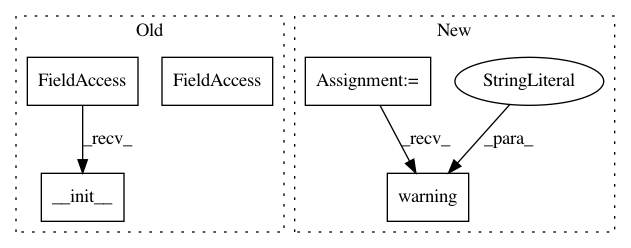

227b16153ac90944ae35a25aa2d751b1d771132c,spynnaker8/models/connectors/all_to_all.py,AllToAllConnector,__init__,#AllToAllConnector#Any#Any#Any#Any#,30
Before Change
CommonAllToAllConnector.__init__(
self, allow_self_connections=allow_self_connections,
safe=safe, verbose=verbose)
PyNNAllToAllConnector.__init__(
self, allow_self_connections=allow_self_connections, safe=safe,
callback=callback)
After Change
_BaseClass.__init__(
self, allow_self_connections=allow_self_connections,
safe=safe, verbose=verbose, callback=callback)
logger.warning(
"please use spynnaker.pyNN.models.neural_projections.connectors."
"AllToAllConnector instead")
In pattern: SUPERPATTERN
Frequency: 4
Non-data size: 5
Instances
Project Name: SpiNNakerManchester/sPyNNaker
Commit Name: 227b16153ac90944ae35a25aa2d751b1d771132c
Time: 2021-01-14
Author: donal.k.fellows@manchester.ac.uk
File Name: spynnaker8/models/connectors/all_to_all.py
Class Name: AllToAllConnector
Method Name: __init__
Project Name: SpiNNakerManchester/sPyNNaker
Commit Name: c6609f426af94fc1b774b1c7873766ec313c81ca
Time: 2021-01-14
Author: donal.k.fellows@manchester.ac.uk
File Name: spynnaker8/models/connectors/one_to_one.py
Class Name: OneToOneConnector
Method Name: __init__
Project Name: SpiNNakerManchester/sPyNNaker
Commit Name: 227b16153ac90944ae35a25aa2d751b1d771132c
Time: 2021-01-14
Author: donal.k.fellows@manchester.ac.uk
File Name: spynnaker8/models/connectors/distance_dependent_prob.py
Class Name: DistanceDependentProbabilityConnector
Method Name: __init__
Project Name: SpiNNakerManchester/sPyNNaker
Commit Name: c45ebbc75e6fc0dca009d95e1b64e98672b91a0f
Time: 2021-01-14
Author: donal.k.fellows@manchester.ac.uk
File Name: spynnaker8/models/connectors/fixed_prob.py
Class Name: FixedProbabilityConnector
Method Name: __init__